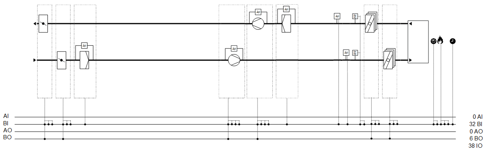
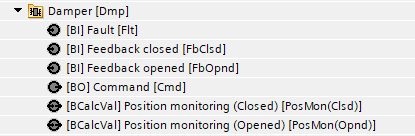
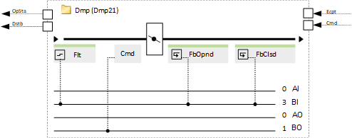
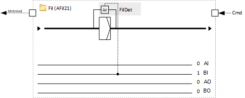
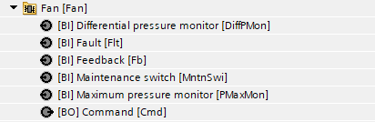
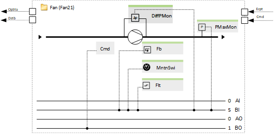
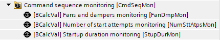
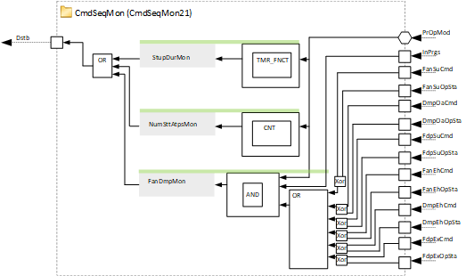
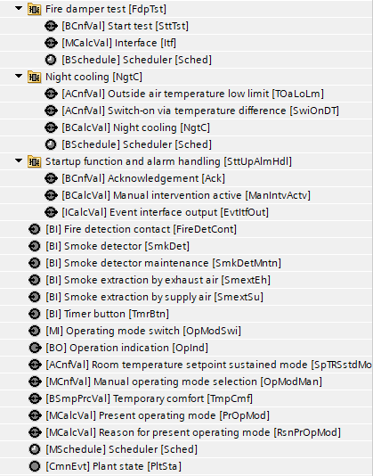
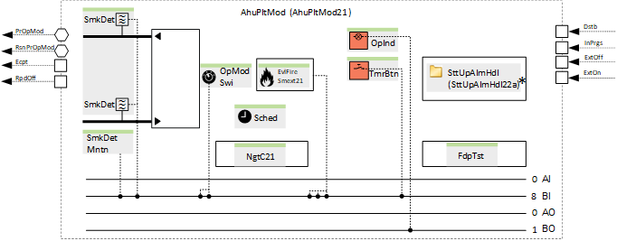

[Vnt21x] 通风，1 速，所有选项
Name: [Vnt21x] Ventilation, 1-speed, all options
Library hierarchy:植物
Plant operating modes
- Off
- On
- On with full speed
- Night cooling
- Smoke extraction by supply air
- Smoke extraction by exhaust air
- Smoke extraction purge
Plant diagram

主要功能 | 主要部件 |
|---|---|
|
|
Program blocks
Exhaust air damper (Optional) | |
 |  |
Outside air damper (Optional) | |
Outside air filter (Optional) | |
 | |
Supply air fan (Optional) | |
 |  |
Extract air fan (Optional) | |
Extract air filter (Optional) | |
Extract air fire dampers (Optional) | |
[Fdp21] Fire damper, open/close function & 2 BI for feedback | |
|
|
Supply air fire dampers (Optional) | |
[Fdp21] Fire damper, open/close function & 2 BI for feedback | |
|
|
Command sequence monitoring (Optional) | |
 |  |
Plant mode determination | |
[AhuPltMod21] Plant operating mode determination for air handling unit, for on/off fans | |
 |  |